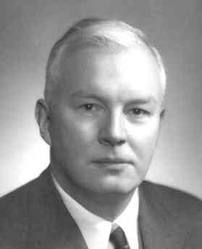

Programs may not be proofs Dear Haskell Curry and W.A. Howard, Like many others, I have high appreciation of the beauty in your works, but I think your discoveries about the Curry-Howard correspondence have been taken too far by the programming languages research community. Following several of your examples showing the similarity between types and logic theorems, some of the researchers started to believe that all programs are just proofs and their types the corresponding theorems. In their own words: "Types are theorems. Programs are proofs." I think it's just the other way around: "Proofs are programs, but programs may not be proofs". All proofs are programs, but only some of the programs are proofs. In mathematical terms, programs are a strict superset of proofs. Many programs are not proofs simply because proving things is not why they are made. They exist to serve other purposes. Some of them (such as operating systems) may not even terminate, thus failing the most important criteria of being a proof, but they are perfectly legitimate and important programs. Programs are more physical than math and logic---they are real things similar to flowers, trees, animals (or their excrement), cars, paintings, buildings, mountains, the earth and the sun. Their existence is beyond reason. Calling all of them proofs is a bit far-fetched in my opinion :-) Sometimes we can derive theorems from programs and say something about their properties, but way too many times we can't. This is the similar to the fact that sometimes we can derive math theorems from the real world but we don't always succeed. When we fail to predict the future, we can still live it. Similarly, when math and logic fail to predict the behavior of programs, they may still run without problems. It would be nice if more programs are designed in nice ways such that we can predict how they will behave, but there is a limit as to how far we can see into their future. Thanks to this limit, because if all the future can be predicted, programs may not worth existing and life may not worth living. |